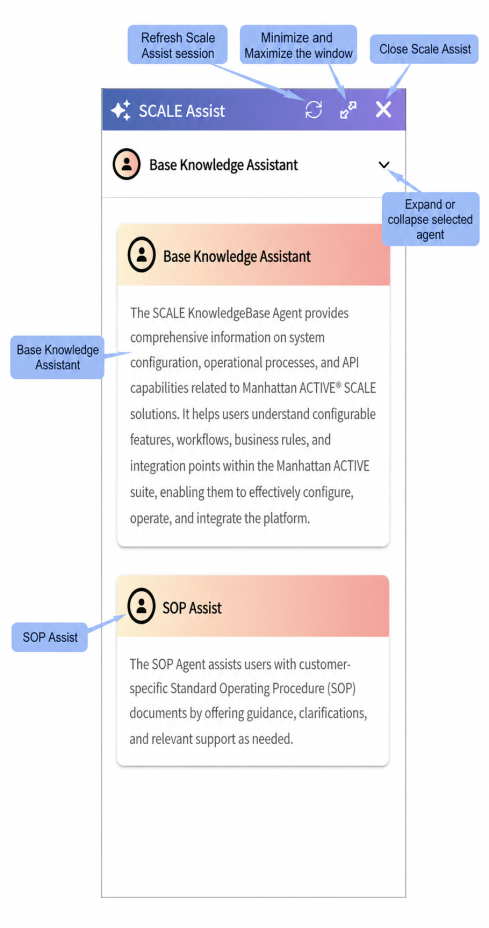
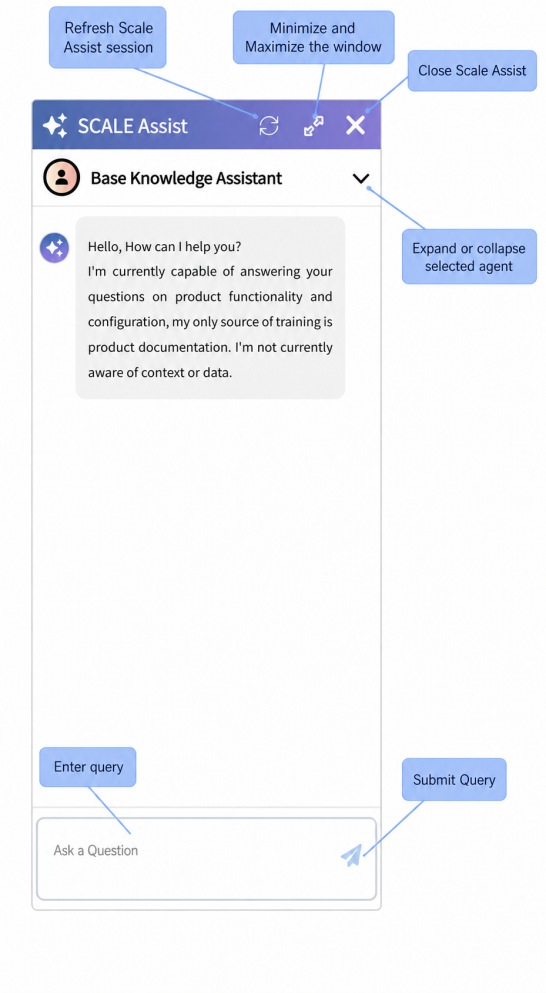

AI Knowledge Assistant for Manhattan Active SCALE
SCALE Assist is an AI-powered knowledge assistant designed to provide real-time, conversational support by understanding user questions and delivering answers from Manhattan Active SCALE product documentation.
SCALE Assist leverages advanced Artificial Intelligence (AI), Natural Language Processing (NLP), and Generative AI technologies to help users quickly find product information, configuration guidance, solution concepts, best practices, and operational procedures.
Note: SCALE Assist is currently available exclusively for Manhattan Active SCALE.
SCALE Assist must be configured once per server.
You can access SCALE Assist from the Navigation Bar in Insight screens, Web Configuration and Warehouse Mobile screens. Look for the assistant icon located in the top-right corner of each page.
Insight Screens
Web Configuration
Warehouse Mobile
Note: SCALE Assist is not available on Trading Partner Management (TPM).
SCALE Assist is designed to understand natural language queries. You can begin by typing a question directly into the assistant.
The user interface is designed for ease of use, featuring intuitive elements to help you interact effectively with the assistant.


Overview
Base Knowledge Assistant is the product knowledge agent for SCALE. It helps users ask plain-language questions and receive answers grounded in Manhattan documentation, including configuration guidance, operational explanations, terminology help, and product behavior details.
Customers use Base Knowledge Assistant(agent) to reduce time spent searching across documentation, get faster answers while configuring or operating SCALE, and understand unfamiliar concepts without leaving the current screen.
Key business benefits include faster self-service learning, more consistent answers from approved knowledge sources, and easier access to traceable references for follow-up reading.
How it works
At a high level, the user opens the assistant, asks a question in natural language, and receives an answer based on approved knowledge sources. The assistant retrieves the most relevant documentation, uses that material to form a response, and presents source references with the answer.
Behind the scenes, the knowledge base is built from trusted Manhattan documentation sources such as standard product documentation and technical API documentation from Developer Hub.
Key features
• Natural-language question answering for solution concepts, best practices, configuration topics, and operational workflows.
• Glossary and definition support for terms and acronyms.
• Reference links that let users open supporting documents in a new tab.
• Feedback tools so users can rate a response and add comments.
• Session continuity across supported SCALE screens during the same session.
Overview
SOP Assist is the customer-procedure agent for SCALE. It is designed to answer questions from customer-owned SOP and FAQ documents so frontline users can get fast answers to standard process questions without waiting for a supervisor.
The feature is especially valuable for new and temporary workers who need frequent reminders during their first weeks on the job. Internal product notes estimate that this type of guidance can save meaningful time each day by reducing interruptions and supervisor dependency.
Key business benefits include faster onboarding, improved operational consistency, better adherence to documented procedures, and less time lost between tasks while associates search for help.
How it works
SOP Assist relies on customer-provided SOP or FAQ documents. Administrators upload and manage those documents, and users then ask process questions in the assistant. The agent uses the customer’s uploaded material to provide guidance, clarifications, and relevant support.
Key features
• Guidance from customer-specific SOP and FAQ documents.
• Fast answers to common process questions such as shift start, break procedures, shift end, cleaning, equipment maintenance, and other standard operating routines.
• Full-screen handheld experience for Warehouse Mobile users in the documented MVP flow.
• Tenant-controlled enablement at the facility level and by user access.
• Customer content management for upload, and deletion of SOP source files.
Managing SOP Documents
The Customer SOP HUB allows administrators to upload, manage, and remove Standard Operating Procedure (SOP) documents that can be used by SCALE Assist to provide customer-specific guidance.
Uploading an SOP Document
1. Navigate to Configuration > SCALE Extend > Customer SOP HUB.
2. Select Upload Document.
3. Choose a supported document file (.pdf or .txt) with a maximum file size of 7 MB.
4. Enter a unique Document ID.
5. Optionally, provide notes or a description for the document.
6. Review and accept the terms and conditions.
7. Select Upload to add the document to the SOP repository.
Deleting an SOP Document
1. Navigate to Configuration > SCALE Extend > Customer SOP HUB.
2. Locate and select the document you want to remove from the document list.
3. Select Delete.
4. Confirm the deletion when prompted.